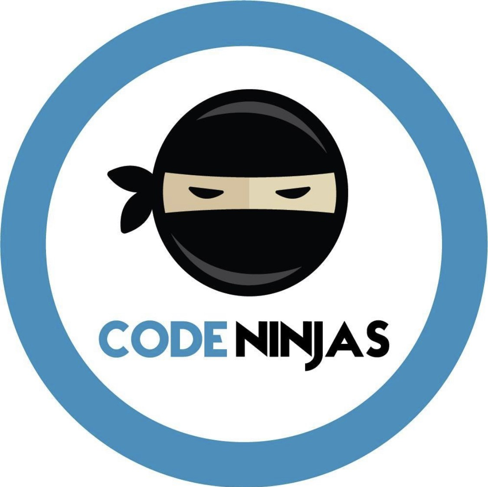
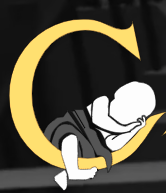

New Jersey Institute of Technology

Master's of Science, Information Systems
I am currently studying at NJIT studying for their information systems program.
Hi! My name is Adam Abramson. I am an aspiring software developer who has contributed to some of the largest brands in the world. I am also currently obtaining my Master's degree at New Jersey Institute of Technology (NJIT).
Master's of Science, Information Systems
I am currently studying at NJIT studying for their information systems program.
Bachelor's of Science, Game Design And Development
This major game me a rounded education during the process of creating video games. It was here where I first learned to code with C#. From there I was able to work with game engines and libraries such as Unity and MonoGame. Other classes I took focused on UX design, 2D animation, 3D modeling, Level design, Web App Development, and even video production. Using this knowledge, I was able to build projects both in groups and by myself as demo games, websites, prototypes on Figma and Axure RP, and board games.
Minor, Web Development
This minor expanded on my focus on web development provided by my major. It starts by teaching the basics of web design using HTML, CSS, and JavaScript. I then learn about front-end frameworks and platforms such as TypeScript, React.js, and .NET. Next, I focus on backend development and database design with SQL, PHP, Node.js, and Express.js.
Minor, Digital Literature & Comparative Media
Through this minor, I was able to gain a deep understanding of how writing and storytelling can be applied across multiple mediums such as film, video games, websites, maps, code, and more. One project I worked on for this minor involved analyzing the elements of a poem using XML.
Certificate, Introduction to Programming with Python and Java Specialization
Before this program, I had never worked with python before and had very little experience with Java. I decided to take this 4-course series in order to gain experience with two of the most popular programming languages in the world. This series taught me the basics of python syntax and logic, as well as how to utilize different libraries such as Pandas and MatPlotLib. Additionally, the Java section reinforced my knowledge of object oriented programming. Taking this series has significantly helped me prepare for my Master's degree as well as gain an understanding of python, Java, and OOP.
Currently, I am working as a software developer part-time at Safilo, one of the world's leading eyewear manufacturers. There I closely work with their Information, Communications, and Technology (ICT) team, on software related projects within the company. One program that I created was a whole database to help track departmental financial data.

I worked at Code Ninjas in 2025 to help instruct children on how to create their own code. As a code sensei, I worked with kids aged 8-14 on developing their own video games. This curiculum included working with .
During the summer of 2024, I worked as an IT intern for L'Oreal, the largest beauty company int the world. I worked with the Online + Offline innovation team to learn about the biggest trends in technology such as AI and sustainablity.

Changeling is a VR mystery game based around hopping into the minds of different family members. I had the opporunity to work on the game's website and game itself during my time studying game development at RIT.
This is one of my personal favorite projects that I have written. It takes Excel files exported from SAP and converts them into JSON. The JSON is then sent to Tompkins T-Sort robots at Safilo’s warehouse in Denver via postman. The robots then interpret the data to take glasses given to it and send them to the proper area. Originally, I wrote the program used CSV files as input but then changed it to Excel with the Sheet.js library because it becomes easier to manage the data using Excel. There are two files that are used for input, one table shows the line item that is being sent to the robot. This spreadsheet has columns that include a string describing the material of the product, the universal product code, and keys representing how much of the product. The other file represents the handling unit responsible for transporting materials.
At Safilo, I built a database for managing the ICT department’s financial data. It uses SQL to track all of the contracts that the ICT team has with other companies. There are two different tables for the database. One focuses on the contracts themselves and the other focuses on the vendors. The vendor table has the list of contacts to reach out to if a contract is near its end. The contract tables focus on the product itself, providing many columns such as cost, currency, destination, and whether it is a subscription or not. It even has data pulled from SAP such as the product request and product order number. On the front-end, it uses a web-based UI that guides users into navigating, adding, removing, and creating entries to analyze the SQL data. There are two loops, one for the contracts and one for the vendors. You start by selecting or adding rows to the table, once you select the filtered rows, you can press the update button to change the rows in the table. The update table is modeled after an excel spreadsheet since it was what the team was using prior. Lastly, there is a red column on the side of the update table with a red checkbox that when pressed can delete the row if the delete button is pressed.
This is the main project that I worked on while I was at L’Oreal. Prior to my internship, the newsletter was created manually each month using MailChimp. It was a tedious process that took over a week to complete. Additionally, the newsletter had bugs where the button did not work properly on top of incredibly recursive code. To start on the project, I wrote in a new button with HTML that worked across all devices, and reduced the length of the code by half since most of it was nested div elements. I then moved the newsletter to an excel spreadsheet to automate the process of creating it. The HTML is broken up into rows where there is an empty column in each row for each response the user makes today.